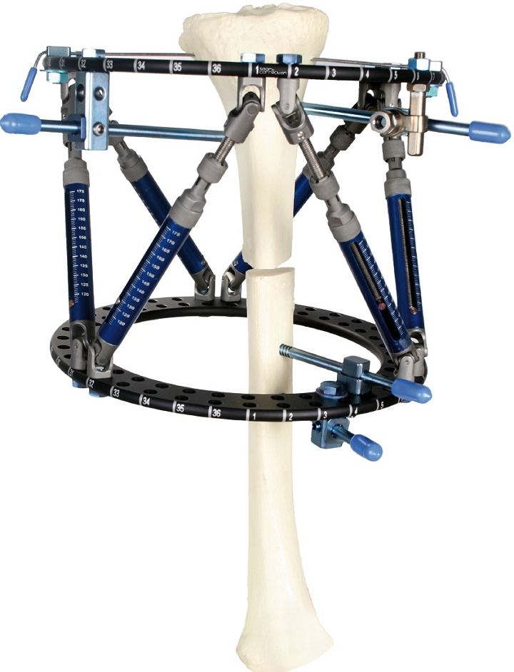
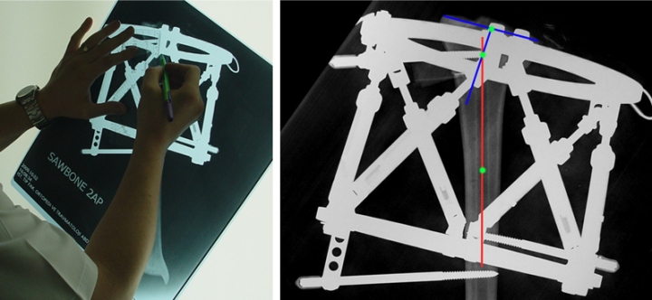
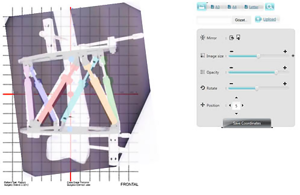
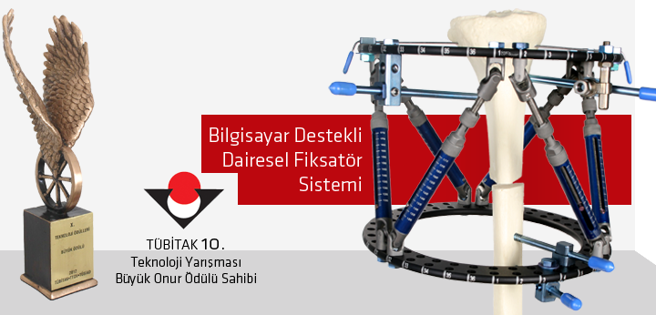
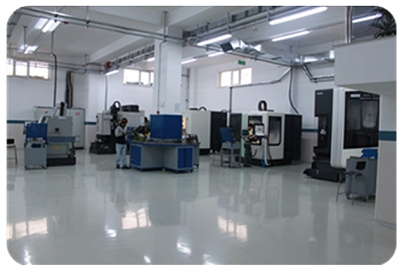
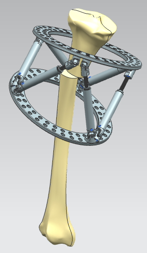

Haberler
> 18-02-2013 > Bilgisayar Destekli Kemik Eðriliði Düzeltme Sistemi (bir yeni ürün geliþtirme baþarý hikayesi):
Hexagon Teknolojik Üretim Ltd. Þti. 2004 yýlýnda Ortopedik Travma Ürünleri konusunda özel ürünler ithalatý yaparak ulusal ticaret yapmaya baþlamýþ ve sektörde birçok özel tekniðin kullanýlmaya baþlamasýný da saðlamýþtýr.
Özellikle kemik eðriliklerinin düzeltilmesi alanýnda büyük bir ihtiyacý farkederek, iyi eðitimli ve farklý disiplinlerden oluþan bir ürün geliþtirme ekibi oluþturulmuþtur. Ekibin, uzun ve yoðun çalýþmalarý sonucunda, “Bilgisayar Destekli Kemik Eðriliði Düzeltme Sistemi” projesinin, öncelikle yazýlým aþamasý tamamlanarak yine büyük bir hassasiyetle doðrulama çalýþmalarý yapýlmýþ ve elde edilen veriler ýþýðýnda da tedavi için kullanýlacak donaným tasasrýmlarý da yapýlarak ürün belgelendirmesi gerçekleþtirilmiþtir.
The Smart Correction® Computer-Assisted Circular External Fixator System
is a copyrighted software based, deformity correction tool. www.smartcorrection.com/
Gerek ürün geliþtirme çalýþmalarýnýn uluslararasý standartlarda yürütülmesi, gerekse de tasarlanmýþ olan ürünlerin imalatýnýn kontrollü olarak yapýlabilmesi için, 2010 yýlýnda küçük bir atölye kurulmuþ ve ISO 13485 standartlarýna uygun olarak altyapý çalýþmalarý tamamlanmýþtýr. Ürün geliþtirme süreci tamamlanmýþ olan “Bilgisayar Destekli Kemik Eðriliði Düzeltme Sistemi” için gerekli olan bütün parçalarýn üretimi için hazýrlýklar yapýlmaya baþlanmýþ ve bu süreçte ürüne ait farklý üç parça çok özel niteliklerle tasarlanarak patent müracaatlarý da yapýlmýþtýr.

Bilgisayar Destekli Kemik Eðriliði Düzeltme Fiksatörü
Tamamen firma kaynaklarý ile geliþtirilerek üretimi de yine firma bünyesinde yapýlmakta olan “Bilgisayar Destekli Kemik Eðriliði Düzeltme Sistemi”, ortopedik deformite alanýnda birçok yeniliðinde öncüsü olmuþtur. Kemik eðriliðinin deðerlendirilmesi ve düzeltmenin planlanmasý için gerekli olan ve röntgen görüntüsü üzerinden gönye-cetvel yardýmý ile alýnan tüm ölçümlerin web tabanlý özel bir “Radyografik Navigasyon Yazýlýmý” ile yapýlýyor olmasý ve bu yazýlým sayesinde düzeltmenin gerçekleþmesini saðlayan hesaplama yazýlýmýna veri saðlanmasý, uluslararasý anlamda sektöre getirilen yenilik olmuþtur. Bu özelliðin dýþýnda, klinik anlamda da birçok avantaj bu proje ile gün yüzüne çýkmýþtýr.

Eskiden uygulanan elle ölçüm yöntemi
Geliþtirilen radyografik navigasyon yöntemi

Radyografik Navigasyon Yazýlýmý

Hexagon Teknolojik Üretim Ltd. Þti. olarak üretim hayatýna baþlamýþ olmak ve özgün bir tasarým ile uluslararasý bilinirliðe ulaþmak ve yurtdýþýnda yoðun ilgi gören bir Türk firmasý olmanýn gururuna ilaveten 2012 yýlý TÜBÝTAK-TTGV-TÜSÝAD 10. Teknoloji Ödülleri Yarýþmasý Büyük Ödülünü kazanmak, baþarýmýzý taçlandýrmýþ ve firmamýza daha büyük hedefler için çalýþma motivasyonu getirmiþtir.

Bugün, ÝTOSB (Ýstanbul Tuzla Organize Sanayi Bölgesi)‘nde firmanýn kendine ait 3.000 metrekare büyüklüðündeki, amaca yönelik inþa edilmiþ ve uluslararasý standartlara sahip modern üretim tesisinde, Türkiye pazarýnýn dýþýnda hali hazýrda 5 ülkeye daha ihracatý yapýlan ürünler üretilmekte ve daha fazla ülkeye ihracat yapmak içinde yoðun bir dýþ ticaret pazarlama faaliyeti profesyonel bir ekip tarafýndan yürütülmektedir. Ülkenin en yüksek kapasite ve en yeni üretim teknolojisine sahip firmalarýndan biri haline dönüþmüþ olan Hexagon Teknolojik Üretim, yatýrýmlarýna da olanca hýzý ile devam etmektedir. 2013 yýlý 3. çeyreðinde mevcut kapasitesinin %60 oranýnda artmasý planlanmýþ olup gerekli makine ve cihaz sipariþleri verilmiþtir. Baþta Avrupa pazarý olmak üzere, Ortadoðu ve Amerika pazarlarýnda da etkinliðini artýrmak ve ülkenin dýþ ticaret kazancýna katkýda bulunmak amacýyla yöresel talepler doðrultusunda belgelendirme (FDA v.b.) faaliyetleri hýz kesmeden devam ettirmektedir.
Gerek ürün tasarlama süreçlerinde, gerekse de üretim aþamasýnda kullanýlmak ve doðru ürünün üretimini saðlamak üzere yüksek nitelikli Ar-Ge ve Kalite Kontrol ekipmanlarýnýn bulunduðu laboratuvarlar da firma bünyesinde tesis edilmiþtir. Tüm Dünya firmalarý örneklerinde olduðu gibi, bütün yaptýðý tasarým çalýþmalarýnýn tamamýnda 3 boyutlu yazýcý cihazlarý ile modelleyerek danýþman kadrosu ile yorumlayan, metal numunelerin hazýrlanmasý sonrasýnda gerekli olan bütün mekanik testlerini yapan, tasarým ve üretim sýrasýnda numunelerin yorulma testlerini yapmak üzere ülkemizde ilk kez Dinamik Test Cihazý yatýrýmý yapan bir firma olma özelliðini taþýmaktadýr.
Aktif pazarlama çalýþmalarýnda yer alan üst düzey eðitimli satýþ ekiplerine ilaveten, geliþmekte olan üretim tesisinin de eklenmesi ile yaklaþýk 70 kiþinin çalýþtýðý önemli bir iþletme olan Hexagon Teknoloji Üretim Ltd. Þti. 2015 yýlýnda 120 kiþinin çalýþýyor olacaðý ve toplam satýþ hasýlatýnýn asgari %45 ‘inin ihracattan gelmesi hedeflenmiþtir.